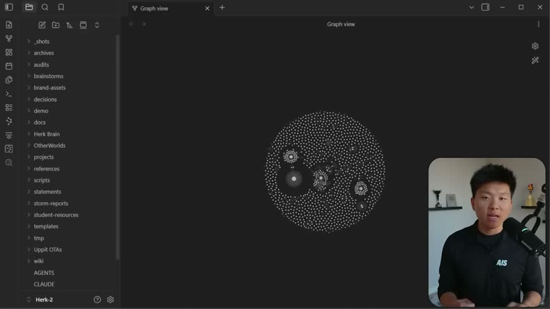
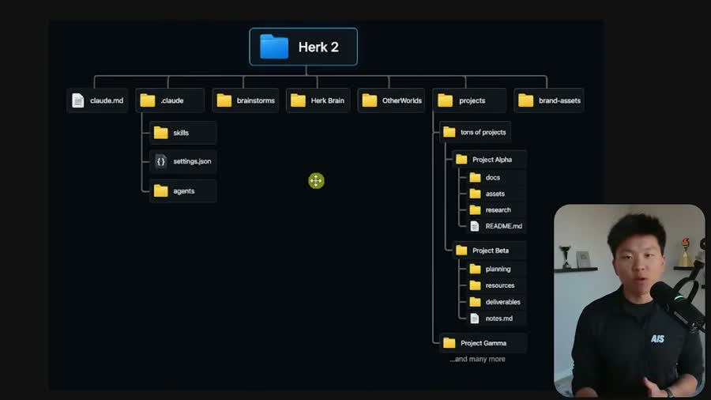
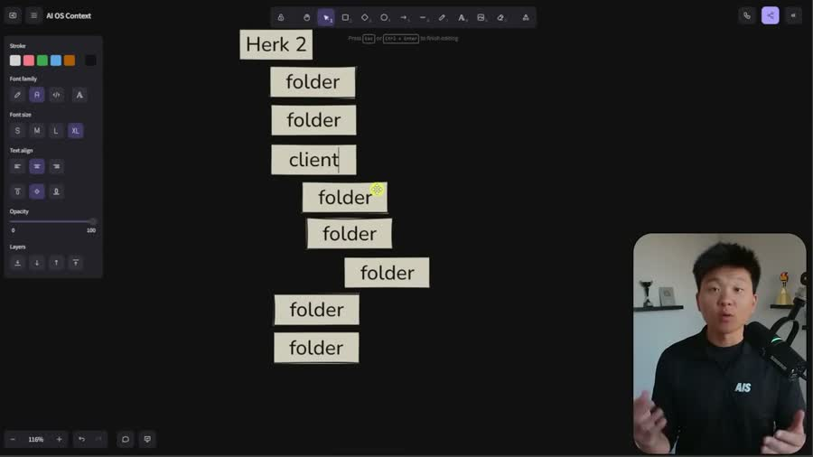
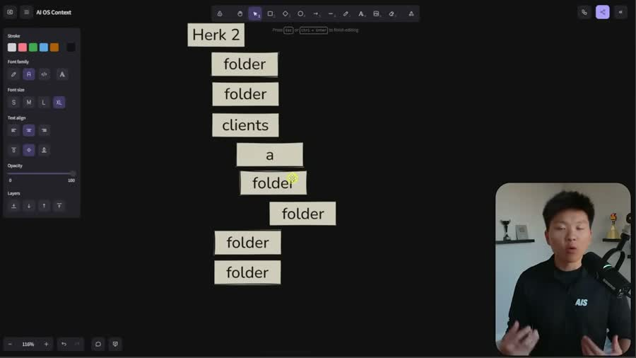
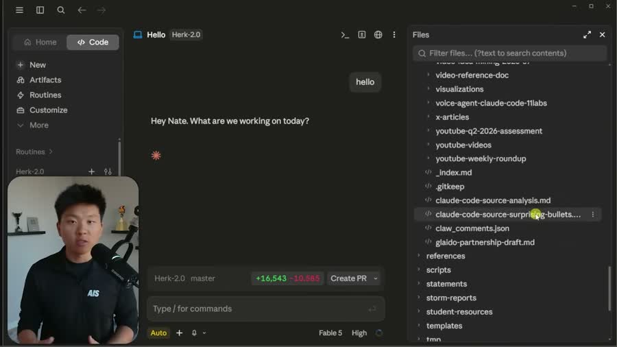
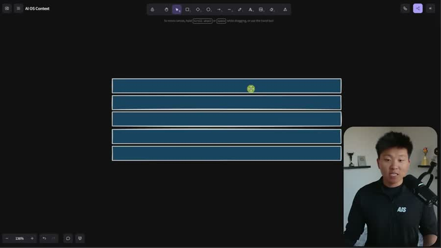
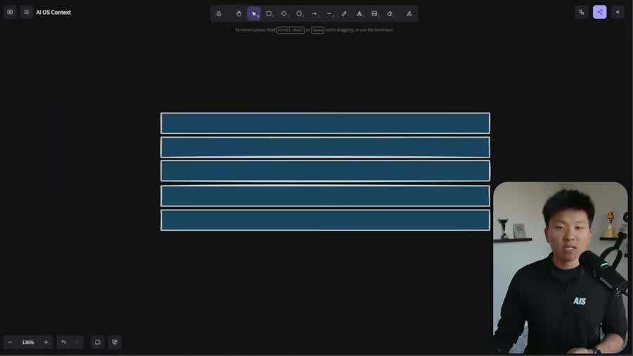
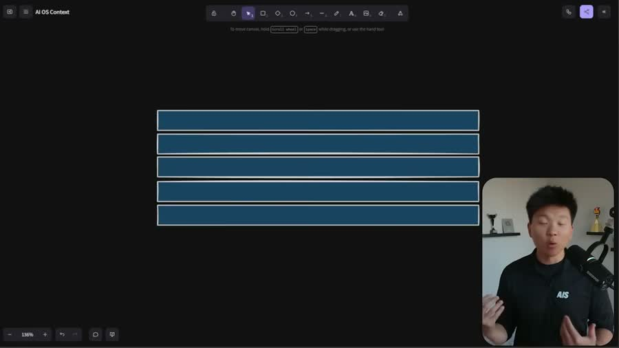
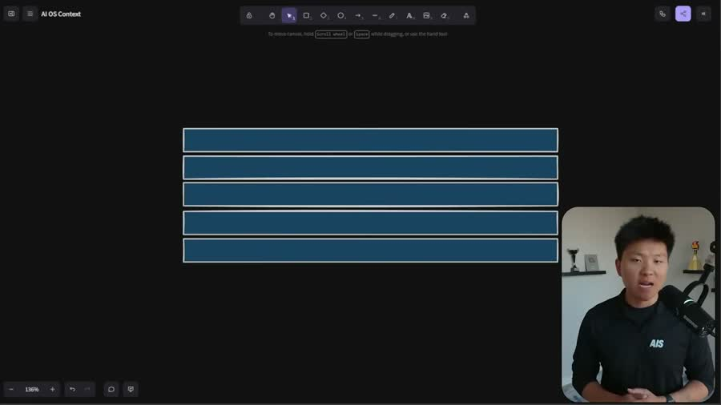
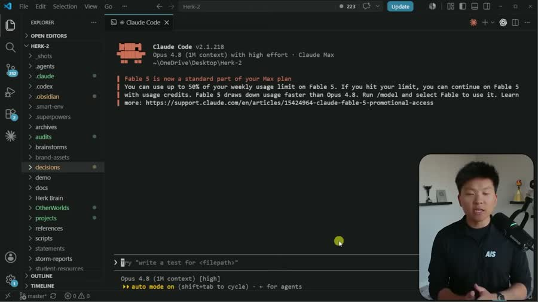

Разбор интро: «Пять приёмов, чтобы ИИ-помощник не выдумывал»
Автор — Нейт, ведёт YouTube-канал про работу с ИИ-помощниками в программировании.
Ролик о том, как разложить свои файлы и заметки, чтобы помощник брал ответы из них,
а не сочинял. Разбирается только интро — первый блок, где автор ещё не объясняет тему,
а удерживает зрителя: показывает вопрос, доказывает, что он общий, называет расплату
и обещает решение.
Граница интро — 0:39. На 0:36 звучит «So let's not waste any time and just get
straight into today's video» — слово-переключатель. Сразу за ним, на 0:39, глаголы
меняются с обещаний на действие: «here is an older version of my project… I'm going
to run this audit». До этой точки автор ничего не объясняет, только держит.
Ролик английский. Под каждой мыслью три слоя: оригинал мелкой строкой,
дословный перевод — что автор буквально сказал, и сильный русский —
тот же ход, написанный так, как он работал бы в посте или на странице сайта.
Фрагмент — первые 42 секунды ролика. Таймкоды в разборе ниже кликабельны:
перематывают этот плеер.
2. Паспорт интро
0:39
длина интро
типичное 60–90 с — это короткое
5
склеек
одна в 8 секунд
7,9 с
средний план
в плотных интро 2–4 с — вдвое медленнее
244
слова в минуту
рекорд базы: у англоязычных ютуберов 180–200
160
слов всего
за 39 секунд
6
мыслей
законченных смысловых блока
2
слоя картинки
экран во весь кадр + автор в углу
244 слова в минуту — это очень быстро, и цифру стоит читать с оговоркой.
Норма английской разговорной речи около 150, у ютуберов 180–200. Здесь на четверть выше
верхней границы. Вероятная причина — монтаж: у таких роликов принято вырезать все паузы
между фразами и слегка ускорять дорожку. Проверка тишины это подтверждает: за 42 секунды
нашлась ровно одна пауза длиннее 0,4 секунды. Живая речь так не звучит — паузы вырезаны.
3. Цепочка ходов
Вопрос вместо боли→«Не ты один»: спрашивают многие→Расплата за беспорядок→Обещание пяти приёмов→Усиление: рост без потери качества→Переключатель на практику
Чего в этом интро нет: приветствия, представления себя, регалий, просьбы досмотреть,
подарка за подписку, показа результата «до и после». Вход — сразу с вопроса, который автору
задают чаще всего. Это редкий заход: обычно начинают с боли зрителя, а здесь боль появляется
только третьим ходом. Роль доказательства выполняет собственная раскладка папок, показанная
на экране, — не слова, а картинка.
The number one most common question I've been getting lately is about how I have my AI operating system organized.
Самый частый вопрос, который мне в последнее время задают, — это вопрос о том, как у меня организована моя операционная система на искусственном интеллекте.
23,0 слова в предложении · 23 слова / 1 предложение
Сильный русский
Мне пишут каждую неделю. Чаще всего — один и тот же вопрос.
Как разложены мои файлы для помощника. Речь про рабочее место,
откуда помощник берёт данные: папки, заметки, правила.
Дальше я показываю свою раскладку. Вы сделаете такую же у себя.
6,5 слова в предложении · 39 слов / 6 предложений
0:01 — экран с деревом папок появляется первым, до того как автор объяснил, что это.

0:03 — схема разворачивается: одна корневая папка, под ней восемь веток.
0:05 — 0:14«Не ты один»: спрашивают многие237 слов/мин
Оригинал и дословный перевод
Questions about how I should be routing files and how I should have wikis organized and folders organized and where do I put client projects and so many questions around the organization of it.
Вопросы о том, как мне следует направлять файлы, и как у меня должны быть организованы вики, и организованы папки, и куда мне класть клиентские проекты, и так много вопросов вокруг организации всего этого.
33,0 слова в предложении · 33 слова / 1 предложение
Сильный русский
Спрашивают об одном и том же:
куда отправлять новые файлы;
как собрать свой справочник;
как назвать папки;
где держать работу по каждому заказчику.
Про порядок спрашивают чаще всего. Значит, спотыкаетесь тут не вы одни.
4,6 слова в предложении · 37 слов / 8 предложений

0:07 — та самая раскладка целиком: корень «Herk 2», под ним папки с настройками, заметками, проектами заказчиков. Автор в углу кадра, экран занимает всё остальное.

0:13 — камера ведёт по правой ветке: проекты заказчиков разложены по одинаковой схеме.
0:14 — 0:24Расплата за беспорядок273 слова/мин — самый быстрый кусок
Оригинал и дословный перевод
Because the problem is if you don't have it organized, then your agent is going to start to hallucinate things not only to you, but potentially in your skills and when you're having it build automations and stuff like that that could get pretty bad.
Потому что проблема в том, что если у вас это не организовано, то ваш агент начнёт галлюцинировать вещи не только вам, но потенциально и в ваших скиллах, и когда вы заставляете его строить автоматизации и тому подобное, что может стать довольно плохо.
42,0 слова в предложении · 42 слова / 1 предложение
Сильный русский
Порядка нет — помощник начинает выдумывать.
Выдумка приходит к вам в ответе.
Выдумка попадает в ваши готовые наборы правил, которые помощник запускает по команде.
Выдумка уходит в дела, которые крутятся без вашего участия.
Там её никто не читает.
7,0 слова в предложении · 42 слова / 6 предложений

0:16 — переход на рабочее окно: слева список папок, справа переписка с помощником.

0:21 — помощник здоровается по имени и спрашивает, над чем работаем. Справа открыт список файлов — то самое место, откуда он берёт данные.
So today I want to talk to you guys about these five different tricks that I've been using that have helped me keep my AI operating system super accurate, super up-to-date,
Итак, сегодня я хочу рассказать вам об этих пяти различных трюках, которые я использую и которые помогли мне поддерживать мою операционную систему на искусственном интеллекте супер точной, супер актуальной,
29,0 слова в предложении · 29 слов / 1 предложение
Сильный русский
Сегодня — пять приёмов. Я пользуюсь ими сам. Что вы получите:
ответы помощника совпадают с вашими настоящими данными;
в ответах стоят сегодняшние сведения, а не прошлогодние.
5,0 слова в предложении · 25 слов / 5 предложений

0:26 — обещание идёт поверх той же рабочей картинки. Отдельного слайда с перечнем пяти приёмов автор не показывает.

0:28 — автор в углу говорит, экран продолжает жить своей жизнью.
0:32 — 0:36Усиление: рост без потери качества249 слов/мин
Оригинал и дословный перевод
and it allows me to add more and more data every week without sacrificing quality or memory.
и это позволяет мне добавлять всё больше и больше данных каждую неделю без потери качества или памяти.
17,0 слова в предложении · 17 слов / 1 предложение
Сильный русский
Каждую неделю я докладываю новые данные. Объём растёт.
Качество ответов не падает. Старое помощник не теряет.
То же самое будет у вас.
4,4 слова в предложении · 22 слова / 5 предложений

0:33 — доказательство обещания лежит в картинке: список папок слева длинный, прокрутка не помещается на экран.
So let's not waste any time and just get straight into today's video.
Так что давайте не будем терять время и сразу перейдём к сегодняшнему видео.
13,0 слова в предложении · 13 слов / 1 предложение
Сильный русский
Не тянем. Начинаем с первого приёма.
3,0 слова в предложении · 6 слов / 2 предложения

0:38 — граница. Автор открывает своё рабочее окно и начинает делать. Обещания кончились.

0:40 — уже основная часть: слева двадцать с лишним папок, внизу командная строка. Плотность склеек сразу вырастает.
5. Что видно по картинке
Экран важнее лица. Автор занимает угол кадра, всё остальное — его рабочее окно.
Доказательство подаётся картинкой, а не словами: зритель видит настоящую раскладку папок
раньше, чем автор успевает про неё рассказать.
Первый кадр — уже схема. На 0:01 дерево папок на экране. Нет ни заставки,
ни приветствия, ни титра с именем. Ролик начинается с того, ради чего его открыли.
Пять склеек на 39 секунд — средний план 7,9 секунды. Для интро это медленно
(обычно 2–4 секунды). Внимание держится не сменой кадров, а темпом речи: 244 слова
в минуту, паузы вырезаны монтажом.
Отдельного слайда с обещанием нет. Когда автор говорит «пять приёмов»,
на экране не появляется перечень из пяти пунктов — картинка продолжает показывать
рабочее окно. Это отличает его от роликов, где под каждое обещание рисуют титр.
6. Что заменено в русской версии и почему
«операционная система на искусственном интеллекте» → «рабочее место, откуда
помощник берёт данные: папки, заметки, правила». Первое нельзя увидеть глазами,
второе — можно.
«агент начнёт галлюцинировать» → «помощник начинает выдумывать». Калька
с английского заменена обычным русским словом.
«в ваших скиллах» → «в готовые наборы правил, которые помощник запускает
по команде». Термин расшифрован в той же фразе.
«что может стать довольно плохо» → «Там её никто не читает». Оценка автора
заменена основанием: читатель делает вывод сам.
«вики, папки, клиентские проекты» одной строкой через «и» → четыре отдельные
пули. Перечисление внутри предложения не читается.
«поддерживать систему супер точной, супер актуальной» → «ответы помощника
совпадают с вашими настоящими данными; в ответах стоят сегодняшние сведения».
Названо, что получит читатель, а не какое свойство у системы.
Средняя длина предложения упала во всех шести блоках: с 13–42 слов до 3–7.
При этом объём содержания не срезан — 160 слов оригинала против 171 в русской версии.
Цепочка ходов автора не менялась.